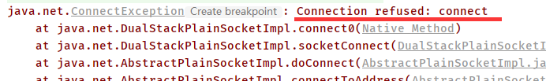

课程：宋红康 JAVA
网络编程概述
Java是Internet上的语言，它从语言级_上提供了对网络应用程序的支持，程序员能够很容易开发常见的网络应用程序。
Java提供的网络类库，可以实现无痛的网络连接，联网的底层细节被隐藏在Java的本机安装系统里，由JVM进行控制。并且Java实现了一个跨平台的网络库，程序员面对的是一个统一的网络编程环境。
网络基础
- 计算机网络：把分布在不同地理区域的计算机与专门的外部设备用通信线路互连成一个规模大、功能强的网络系统，从而使众多的计算机可以方便地互相传递信息、共享硬件、软件、数据信息等资源。
- 网络编程的目的：直接或间接地通过网络协议与其它计算机实现数据交换，进行通讯。
- 网络编程中有两个主要的问题：
- 如何准确地定位网络上一台或多台主机，进而定位主机上的特定的应用。
- 找到主机后如何可靠高效地进行数据传输。
网络通信要素
如何实现网络中的主机互相通信
通信地址：IP和端口号
通信规则：网络通信协议
- OSI参考模型:模型过于理想化，未能在因特网上进行广泛推广
- TCP/IP参考模型(或TCP/IP协议):事实上的国际标准。
IP和端口号
IP地址: InetAddress
唯一的标识Internet上的计算机(通信实体)
本地回环地址(hostAddress): 127.0.0.1 主机名(hostName): localhost
IP地址分类方式一： IPV4和IPV6
- IPV4: 4个字节组成，4个0-255。大概42亿，30亿都在北美，亚洲4亿。2011年初已经用尽。以点分十进制表示，如192.168.0.1
- IPV6:128位(16个字节)，写成8个无符号整数，每个整数用四个十六进制位表示，数之间用冒号(: )分开，如: 3ffe:3201:1401:1280:c8ff:fe4d:db39:1984
IP地址分类方式二：
- 公网地址(万维网使用)
- 私有地址(局域网使用)
- 192.168.开头的就是私有址址，范围即为
192.168.0.0--192.168.255.255，专门为组织机构内部使用
端口号
端口号标识正在计算机上运行的进程(程序)
不同的进程有不同的端口号
被规定为一个16位的整数0~65535。，
端口分类：
- 公认端口: 0~1023。被预先定义的服务通信占用(如: HTTP占用端口80，FTP占用端口21，Telnet占用端口23)
- 注册端口: 1024~49151。 分配给用户进程或应用程序。 (如: Tomcat占用端口8080，MySQL 占用端口3306，Oracle占用端口1521等) 。
- 动态/私有端口: 49152~65535。
端口号与IP地址的组合得出一一个网络套接字：Socket
InetAddress类
InetAddress类：代表这一个ip地址
Internet上的主机有两种方式表示地址：
- 域名(hostName)：
www.atguigu.com - IP地址(hostAddress)： 202.108.35.210
InetAddress类主要表示IP地址，两个子类: Inet4Address、Inet6Address。
InetAddress类对象含有一个Internet主机地址的域名和IP地址：www.atguigu.com 和202.108.35.210。
域名容易记忆，当在连接网络时输入一个主机的域名后，域名服务器(DNS)负责将域名转化成IP地址，这样才能和主机建立连接。（域名解析）
如何实例化InetAddress
public static InetAddress getLocalHost()public static InetAddress getByName(String host)
常用方法
public String getHostAddress():返回IP地址字符串(以文本表现形式)。public String getHostName():获取此IP地址的主机名public boolean isReachable(int timeout):测试是否可以达到该地址
public static void main(String[] args) {
try {
//类似于：File file = new File("hello.txt");
InetAddress inet1 = InetAddress.getByName("192.168.10.14");
System.out.println(inet1);// /192.168.10.14
InetAddress inet2 = InetAddress.getByName("www.atguigu.com");
// www.atguigu.com/182.89.221.203 --> 域名/通过DNS解析出来的ip地址
System.out.println(inet2);
InetAddress inet3 = InetAddress.getByName("127.0.0.1");
// 表示本地地址： /127.0.0.1
System.out.println(inet3);
//获取本地ip
InetAddress inet4 = InetAddress.getLocalHost();
// LAPTOP-99NFUR80/192.168.200.1
System.out.println(inet4);
//getHostName() ：www.atguigu.com
System.out.println(inet2.getHostName());
//getHostAddress()：182.89.221.203
System.out.println(inet2.getHostAddress());
} catch (UnknownHostException e) {
e.printStackTrace();
}
}
网络通信协议
网络通信协议：计算机网络中实现通信必须有一些约定，即通信协议，对速率、传输代码、代码结构、传输控制步骤、出错控制等制定标准。
问题：网络协议太复杂。计算机网络通信涉及内容很多，比如指定源地址和目标地址，加密解密，压缩解压缩，差错控制，流量控制，路由控制。
通信协议分层的思想：为了解决网络协议太复杂的问题。在制定协议时，把复杂成份分解成一些简单的成份，再将它们复合起来。最常用的复合方式是层次方式，即同层间可以通信、上一层可以调用下一层，而与再下一层不发生关系。各层互不影响，利于系统的开发和扩展。
TCP/IP协议簇
传输层协议中有两个非常重要的协议:
- 传输控制协议TCP(Transmission Control Protocol)
- 用户数据报协议UDP(User Datagram Protocol)
TCP/IP以其两个主要协议：传输控制协议(TCP)和网络互联协议(IP)而得名，实际上是一组协议，包括多个具有不同功能且互为关联的协议。
IP (Internet Protocol) 协议是网络层的主要协议，支持网间互连的数据通信。
TCP/IP 协议模型从更实用的角度出发，形成了高效的四层体系结构，即物理链路层、IP层、传输层和应用层。
TCP和UDP
TCP协议：
使用TCP协议前，须先建立TCP连接，形成传输数据通道
传输前，采用“三次握手”方式，点对点通信，是可靠的
TCP协议进行通信的两个应用进程：客户端、服务端。
在连接中可进行大数据量的传输
三次握手与四次挥手
三次握手
- 第一次握手(SYN=1, seq=x)：客户端发送一个SYN标记的包，Seq初始序列号x，发送完成后客户端进入SYN_SEND状态。
- 第二次握手([SYN,ACK], Seq = y, ACK=x + 1)：服务器返回确认包(ACK)应答，同时还要发送一个SYN包回去。ACK = x+1,表示确认收到(客户端发来的Seq值 + 1)，Seq = y, 表示让客户端确认是否能收到。发送完成后服务端进入SYN_RCVD状态。
- 第三次握手([ACK], ACK = y + 1)：客户端再次发送确认包(ACK),ACK = y+ 1, 表示确认收到服务器的包（服务端发来的Seq值 + 1）。客户端发送完毕后，进入ESTABLISHED状态，服务端接收到这个包，也进入ESTABLISHED状态, TCP握手结束。
【为什么是三次握手?不是两次或者四次？】
从假设的角度来分析吧，假如是两次握手，会发生什么情况呢? 服务端在发出应答消息后，它根本就不能确认客户端是否接受到消息了，那么这样意味着只有客户端可以向服务端发送数据。
假如是四次握手呢？明明已经保证了一个稳定的传输流了，为什么还要浪费性能再去发一次消息，浪费了性能。
所以三次是最合适的，这里本人只是从个人的角度简单分析，没有从序列等原理的角度去剖析。
四次挥手
- 第一次挥手（[FIN], Seq = x）：客户端发送一个FIN标记的包，告诉服务器需要关闭连接，表示自己不用发送数据了，但是还可以接收数据。发送完成后，客户端进入FIN_WAIT_1状态。
- 第二次挥手 ([ACK], ACK = x + 1)：服务端发送一个ACK的确认包，告诉客户端接收到关闭的请求，但是还没有准备好。发送完成后，服务端进入CLOSE_WAIT状态，客户端收到这个包后，进入FIN_WAIT_2，等待服务器关闭连接。
- 第三次挥手 ([FIN], Seq = y)：服务端准备好关闭连接时，发送FIN标记的包，告诉客户端准备关闭了。发送完成后，服务端进入LAST_ACK状态，等待客户端确认。
- 第四次挥手 ([ACK], ACK = y + 1)：客户端接收到服务端的关闭请求，再发送ACK标记的确认包，进入TIME_WAIT状态，等待服务端可能请求重传的ACK包。服务端接收到ACK包后，关闭连接，进入CLOSED状态。客户端在等待固定时间(两个最大段生命周期)后，没有接收到服务的ACK包，认为服务器已关闭连接，自己也关闭连接，进入CLOSED状态。
【为什么是三次握手，却是四次挥手？三次挥手不可以吗？】
继续从假设的角度分析，如果是三次挥手，在服务器接收到客户端发送关闭的请求后，把SYN和ACK包一起发过去。这样会造成服务端还有数据没有发送完，造成了数据的丢失。所以中间的这一段时间，等待服务器把剩余的数据发送完是很有必要的。
socket
socket的概述：
利用套接字(Socket)开发网络应用程序早已被广泛的采用，以至于成为事实上的标准。
网络上具有唯一标识的IP地址和端口号组合在一起才能构成唯一能识别的标识符套接字。
通信的两端都要有Socket，是两台机器间通信的端点。
网络通信其实就是Socket间的通信。
Socket允许程序把网络连接当成一个流， 数据在两个Socket间通过IO传输。
一般主动发起通信的应用程序属客户端，等待通信请求的为服务端。
Socket分类：
- 流套接字(stream socket) ：使用TCP提供可依赖的字节流服务
- 数据报套接字( datagram socket) :使用UDP提供“尽力而为”的数据报服务.
Socket类的常用构造器：
public Socket(InetAddress address,int port)创建一个 流套接字并将其连接到指定IP地址的指定端口 号。
public Socket(String host,int port)创建一个流 套接字并将其连接到指定主机上的指定端口号。
Socket类的常用方法：
public InputStream getInputStream()返回此套接字的输入流。可以用于接收网络消息public OutputStream getOutputStream()返回此套接字的输出流。可以用于发送网络消息public InetAddress getInetAddress()此套接字连接到的远程IP地址;如果套接字是未连接的，则返回null。public InetAddress getLocalAddress()获取套接字绑定的本地地址。即 本端的IP地址public int getPort()此套接字连接到的远程端口号;如果尚未连接套接字，则返回0。public int getLocalPort()返回此套接字绑定到的本地端口。如 果尚未绑定套接字，则返回-1。即本端的端口号。public void close()关闭此套接字。套接字被关闭后，便不可在以后的网络连接中使用(即无法重新连接或重新绑定)。需要创建新的套接字对象。关闭此套接字也将会关闭该套接字的InputStream和OutputStream。public void shutdownInput()如果在套接字上调用shutdownInput()后从套接字输入流读取内容，则流将返回EOF(文件结束符)。即不能在从此套接字的输入流中接收任何数据。public void shutdownOutput()禁用此套接字的输出流。对于TCP套接字，任何以前写入的数据都将被发送，并且后跟TCP的正常连接终止序列。如果在套接字上调用shutdownOutput()后写入套接字输出流，则该流将抛出IOException。即不能通过此套接字的输出流发送任何数据。
TCP网络编程：基于Socket的TCP编程
客户端发送信息给服务端，服务端将数据显示在控制台上
//客户端
@Test
public void client() {
Socket socket = null;
OutputStream os = null;
try {
//1.创建Socket对象，指明服务器端的ip和端口号
InetAddress inet = InetAddress.getByName("192.168.200.1");
socket = new Socket(inet,8899);
//2.获取一个输出流，用于输出数据
os = socket.getOutputStream();
//3.写出数据的操作
os.write("你好，我是客户端mm".getBytes());
} catch (IOException e) {
e.printStackTrace();
} finally {
//4.资源的关闭
if(os != null){
try {
os.close();
} catch (IOException e) {
e.printStackTrace();
}
}
if(socket != null){
try {
socket.close();
} catch (IOException e) {
e.printStackTrace();
}
}
}
}
//服务端
@Test
public void server() throws IOException {
ServerSocket ss = null;
Socket socket = null;
InputStream is = null;
ByteArrayOutputStream baos = null;
try {
//1.创建服务器端的ServerSocket，指明自己的端口号
ss = new ServerSocket(8899);
//2.调用accept()表示接收来自于客户端的socket
socket = ss.accept();
//3.获取输入流
is = socket.getInputStream();
//不建议这样写，可能会有乱码
// byte[] buffer = new byte[1024];
// int len;
// while((len = is.read(buffer)) != -1){
// String str = new String(buffer,0,len);
// System.out.print(str);
// }
//4.读取输入流中的数据:
// 使用ByteArrayOutputStream是因为该类底层的字节数组会自动扩容
//可以一次性把操作写入的数据：baos.toString()
baos = new ByteArrayOutputStream();
byte[] buffer = new byte[5];
int len;
while((len = is.read(buffer)) != -1){
baos.write(buffer,0,len);
}
System.out.println(baos.toString());
System.out.println("收到了来自于："
+ socket.getInetAddress()
.getHostAddress() + "的数据");
} catch (IOException e) {
e.printStackTrace();
} finally {
if(baos != null&&is != null
&&socket != null&&ss != null){
//5.关闭资源
baos.close();
is.close();
socket.close();
ss.close();
}
}
}
客户端发送文件给服务端，服务端将文件保存在本地
/*
这里涉及到的异常，应该使用try-catch-finally处理
*/
@Test
public void client() throws IOException {
//1.
Socket socket = new Socket(InetAddress
.getByName("127.0.0.1"),9090);
//2.
OutputStream os = socket.getOutputStream();
//3.
FileInputStream fis
= new FileInputStream(
new File("beauty.jpg"));
//4.
byte[] buffer = new byte[1024];
int len;
while((len = fis.read(buffer)) != -1){
os.write(buffer,0,len);
}
//5.
fis.close();
os.close();
socket.close();
}
/*
这里涉及到的异常，应该使用try-catch-finally处理
*/
@Test
public void server() throws IOException {
//1.
ServerSocket ss = new ServerSocket(9090);
//2.
Socket socket = ss.accept();
//3.
InputStream is = socket.getInputStream();
//4.
FileOutputStream fos
= new FileOutputStream(
new File("beauty1.jpg"));
//5.
byte[] buffer = new byte[1024];
int len;
while((len = is.read(buffer)) != -1){
fos.write(buffer,0,len);
}
//6.
fos.close();
is.close();
socket.close();
ss.close();
}
从客户端发送文件给服务端，服务端保存到本地，并返回“发送成功”给客户端
/*
这里涉及到的异常，应该使用try-catch-finally处理
*/
@Test
public void client() throws IOException {
//1.
Socket socket = new Socket(InetAddress
.getByName("127.0.0.1"),9090);
//2.
OutputStream os = socket.getOutputStream();
//3.
FileInputStream fis =
new FileInputStream(
new File("beauty.jpg"));
//4.
byte[] buffer = new byte[1024];
int len;
while((len = fis.read(buffer)) != -1){
os.write(buffer,0,len);
}
//关闭数据的输出：如果不关闭流，程序会被卡住
socket.shutdownOutput();
//5.接收来自于服务器端的数据，并显示到控制台上
InputStream is = socket.getInputStream();
ByteArrayOutputStream baos = new ByteArrayOutputStream();
byte[] bufferr = new byte[20];
int len1;
while((len1 = is.read(buffer)) != -1){
baos.write(buffer,0,len1);
}
System.out.println(baos.toString());
//6.
fis.close();
os.close();
socket.close();
baos.close();
}
/*
这里涉及到的异常，应该使用try-catch-finally处理
*/
@Test
public void server() throws IOException {
//1.
ServerSocket ss = new ServerSocket(9090);
//2.
Socket socket = ss.accept();
//3.
InputStream is = socket.getInputStream();
//4.
FileOutputStream fos =
new FileOutputStream(
new File("beauty2.jpg"));
//5.
byte[] buffer = new byte[1024];
int len;
while((len = is.read(buffer)) != -1){
fos.write(buffer,0,len);
}
System.out.println("图片传输完成");
//6.服务器端给予客户端反馈
OutputStream os = socket.getOutputStream();
os.write("你好，美女，照片我已收到，非常漂亮！".getBytes());
//7.
fos.close();
is.close();
socket.close();
ss.close();
os.close();
}
Java语言的基于套接字编程分为服务端编程和客户端编程，其通信模.型如图所示：

UDP网络编程
类DatagramSocket和DatagramPacket实现了基于UDP协议网络程序。
UDP数据报通过数据报套接字DatagramSocket发送和接收，系统不保证UDP数据报一定能够安全送到目的地，也不能确定什么时候可以抵达。
DatagramPacket对象封装了UDP数据报，在数据报中包含了发送端的IP地址和端口号以及接收端的IP地址和端口号。
UDP协议中每个数据报都给出了完整的地址信息，因此无须建立发送方和接收方的连接。如同发快递包裹一样。
//发送端
@Test
public void sender() throws IOException {
DatagramSocket socket = new DatagramSocket();
String str = "我是UDP方式发送的导弹";
byte[] data = str.getBytes();
InetAddress inet = InetAddress.getLocalHost();
DatagramPacket packet
=new DatagramPacket
(data,0,data.length,inet,9090);
socket.send(packet);
socket.close();
}
//接收端
@Test
public void receiver() throws IOException {
DatagramSocket socket = new DatagramSocket(9090);
byte[] buffer = new byte[100];
DatagramPacket packet
= new DatagramPacket
(buffer,0,buffer.length);
socket.receive(packet);
System.out.println(
new String(packet.getData(),0,packet.getLength()));
socket.close();
}
这个是可以先启动客户端的（sender），不会报错，因为UDP网络编程就是发送发不关对方有没有收到
但是如果是TCP网络编程网络编程下会报错：
URL编程
URL概述
URL(Uniform Resource Locator): 统一资源定位符，它表示Internet 上某一资源的地址。
它是一种具体的URI，即URL可以用来标识一个资源，而且还指明了如何locate这个资源。
通过URL我们可以访问Internet上的各种网络资源，比如最常见的www，ftp站点。浏览器通过解析给定的URL可以在网络上查找相应的文件或其他资源。
URL的基本结构由5部分组成：**<传输协议>://<主机名>:<端口号>/<文件名>#片段名?参数列表**
URL类构造器
public URL (String spec):通过一个表示URL地址的字符串可以构造一个URL对象。例如:
URL url = new URL (“http://www.atguigu.com/”)>;public URL(URL context, String spec):通过基URL和相对URL构造一个URL对象。例如:
URL downloadUrl = new URL(url,“download.html")public URL(String protocol, String host, String file);例如:
new URL("http","www.atguigu.com",“download.html");public URL(String protocol, String host, int port, String file);例如:
URL gamelan = newURL("http", "http://www.atguigu.com", 80,“download.html");
URL类常用方法
public static void main(String[] args) {
try {
URL url = new URL("http://localhost:8080/examples/beauty.jpg?username=Tom");
// public String getProtocol( ) 获取该URL的协议名
System.out.println(url.getProtocol());
// public String getHost( ) 获取该URL的主机名
System.out.println(url.getHost());
// public String getPort( ) 获取该URL的端口号
System.out.println(url.getPort());
// public String getPath( ) 获取该URL的文件路径
System.out.println(url.getPath());
// public String getFile( ) 获取该URL的文件名
System.out.println(url.getFile());
// public String getQuery( ) 获取该URL的查询名
System.out.println(url.getQuery());
} catch (MalformedURLException e) {
e.printStackTrace();
}
}
针对HTTP协议的URLConnection类
URL的方法
openStream():能从网络.上读取数据若希望输出数据，例如向服务器端的CGI( 公共网关接口-Common Gateway Interface-的简称，是用户浏览器和服务器端的应用程序进行连接的接口)。程序发送一些数据，则必须先与URL建立连接，然后才能对其进行读写，此时需要使用URL Connection。
URLConnection：表示到URL所引用的远程对象的连接。当与一个URL建立连接时,首先要在一个URL对象上通过方法openConnection()生成对应的URLConnection对象。如果连接过程失败，将产生lOException.
如何创建URLConnectonn
URL netchinaren = new URL ("http://www.atguigu.com/index.shtml"); URLConnectonn u = netchinaren.openConnection( );代码案例
public static void main(String[] args) { HttpURLConnection urlConnection = null; InputStream is = null; FileOutputStream fos = null; try { //创建统一资源定位符对象 URL url = new URL("http://localhost:8080/examples/beauty.jpg"); //创建连接 urlConnection = (HttpURLConnection) url.openConnection(); //连接远程资源 urlConnection.connect(); //获取输入流 is = urlConnection.getInputStream(); //创建本地的输出流：把读取到的文件输出到本地 fos = new FileOutputStream("day10\\beauty3.jpg"); //操作读取的输入流：读取与写出 byte[] buffer = new byte[1024]; int len; while((len = is.read(buffer)) != -1){ fos.write(buffer,0,len); } System.out.println("下载完成"); } catch (IOException e) { e.printStackTrace(); } finally { //关闭资源 if(is != null){ try { is.close(); } catch (IOException e) { e.printStackTrace(); } } if(fos != null){ try { fos.close(); } catch (IOException e) { e.printStackTrace(); } } if(urlConnection != null){ urlConnection.disconnect(); } } }
URI、URL和URN的区别
URI是uniform resource identifier, 统一资源标识符，用来标识一个资源。
URL是uniform resource locator，统一资源定位符， 它是一种具体的URI，即URL可以用来标识一个资源，而且还指明了如何locate这个资源。
URN是uniform resource name，统一资源命名，是通过名字来标识资源，比如mailto:java-net@java.sun.com。
也就是说，URI是以一种抽象的，高层次概念定义统一资源标识，而URL和URN则是具体的资源标识的方式。URL和URN都是一种URI。
在Java的URI中，一个URI实例可以代表绝对的，也可以是相对的，只要它符合URI的语法规则。而URL类则不仅符合语义，还包含了定位该资源的信息，因此它不能是相对的。
转载请注明来源，欢迎对文章中的引用来源进行考证，欢迎指出任何有错误或不够清晰的表达。可以在下面评论区评论，也可以邮件至 1909773034@qq.com